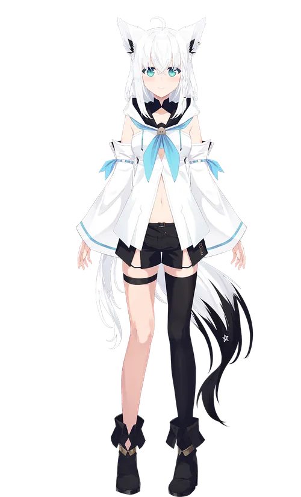

시라카미 후부키
시라카미 후부키 공식 유튜브
- 개요
- 성격 및 방송 특징
- 오리지널 곡
- 개요 시라카미 후부키는 2018년 6월 1일부터 홀로라이브 소속으로 활동을 시작한 버츄얼 유튜버이다. 지금은 홀로라이브 1기생, 홀로라이브 게이머즈로 분류된다.
- 성격 및 방송 특징 시라카미 후부키는 조심스럽고 부끄러움을 타는 성격이지만, 동시에 활동 초기부터 "MC로서 이미 완성되어 있었다." 라는 평가를 받을 정도로 뛰어난 말솜씨와 진행능력을 타고나 수많은 대내, 대외 행사에서 홀로라이브를 대표하는 MC 역할을 담당한 멤버이다. 2018년부터 다양한 콜라보 방송을 적극적으로 기획하였으며, 홀로라이브 멤버들이 단체로 모여 방송을 할 때도 자연스럽게 후부키가 방송 진행을 담당했다. 홀로라이브 공식 채널에서도 후부키가 주연으로 등장하는 공지용 동영상이 업로드 되는 등 후부키를 홀로라이브의 간판 캐릭터로 밀어주는 모습도 찾아볼 수 있다.
- 오리지널 곡